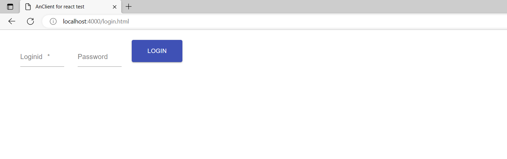

3. 登录配置
3.1. 前端配置
修改dist目录下的 github.json 文件，使其指向后台地址，举例：
{
"host": "http://localhost:8080/jserv-sample"
}
login.html 页面配置：
<!DOCTYPE html>
<html>
<head>
<meta charset="UTF-8" />
<meta name="viewport" content="minimum-scale=1, initial-scale=1, width=device-width" />
<title>AnClient for react test</title>
</head>
<body>
<div id="login"></div>
<noscript>You need to enable JavaScript to run this app.</noscript>
<script src="AnExt-1.0.0.min.js"></script>
<script>
let searchParams = new URLSearchParams(window.location.search)
let serv = searchParams ? searchParams.get('serv') : undefined;
test.LoginApp.bindHtml('login', {serv, parent, home: 'index.html'});
</script>
</body>
</html>
注意
home: ‘index.html’ 表示登录成功后的跳转页面
3.2. 后端继承
用户类必须继承 io.odysz.semantic.jsession.JUser ，然后创建内部类 SampleUserMeta，举例：
package io.odysz.jsample;
import io.odysz.semantic.jsession.JUser;
import io.odysz.semantics.meta.TableMeta;
import io.odysz.semantics.x.SemanticException;
import io.odysz.transact.x.TransException;
public class SampleUser extends JUser {
/**
* Hard coded field string of user table information.
* With this class, sample project's user table can be different from the default table,
* providing the same semantics presented.
* @author odys-z@github.com
*/
public static class SampleUserMeta extends JUserMeta {
public SampleUserMeta(String... conn) {
super(conn);
this.tbl = "a_users";
this.pk = "userId";
this.uname = "userName";
this.pswd = "pswd";
this.iv = "iv";
}
}
public SampleUser(String uid, String pswd, String usrName) throws SemanticException {
super(uid, pswd, usrName);
}
public TableMeta meta() {
return new SampleUserMeta();
}
}
注意
this.tbl 表示用户表
this.pk 表示主键字段名
this.uname 表示用户名字段名
this.pswd 表示密码字段名
this.iv 表示加密字段名
3.3. 登录页面
浏览器中输入http://localhost:4000/login.html，输入用户账号（默认账号admin/123456）：
3.4. 登录成功
登录成功后，则自动跳转到首页 index.html

注意
如果登录时报错CORS，则需要在后端的web.xml中配置允许跨域访问：
<filter>
<filter-name>CorsFilter</filter-name>
<filter-class>org.apache.catalina.filters.CorsFilter</filter-class>
<init-param>
<param-name>cors.allowed.origins</param-name>
<param-value>*</param-value>
</init-param>
<init-param>
<param-name>cors.exposed.headers</param-name>
<param-value>Access-Control-Allow-Origin,Access-Control-Allow-Credentials</param-value>
</init-param>
</filter>
<filter-mapping>
<filter-name>CorsFilter</filter-name>
<url-pattern>/*</url-pattern>
</filter-mapping>